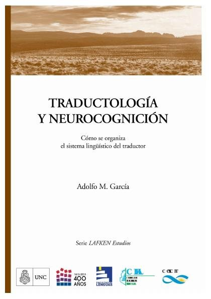
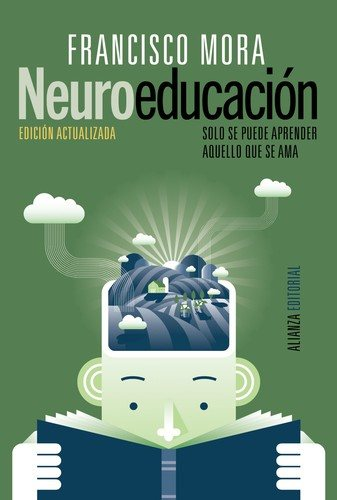
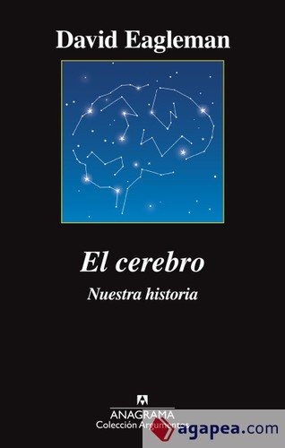
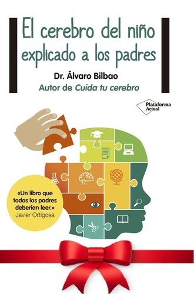
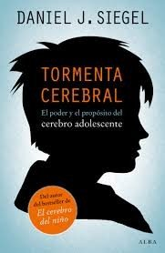

Libros de neuropsicología y funcionamiento cerebral
Libros de neuropsicología y funcionamiento cerebral en español: 13 libros completos para leer gratis aquí mismo y 15 fichas de títulos actuales.
Neuropsicología de las demenciasDeterioro cognitivoNeurociencia del comportamientoNeuropsicología cognitivaNeurociencia del aprendizajeNeurociencia afectivaPlasticidad cerebralNeurociencia de la toma de decisionesNeuropsicología infantilNeurociencia de la concienciaNeuropsicología de las emocionesNeurociencia de la recompensaNeurociencia del sueño
La docencia universitaria en clave neuroeducativa : viejos problemas, nuevos retos: oportunidades para el cambioBueno i Torrens, David, 1965-; Forés i Miravalles, Anna
La docencia universitaria en clave neuroeducativa : viejos problemas, nuevos retos: oportunidades para el cambioBueno i Torrens, David, 1965-; Forés i Miravalles, AnnaLa demencia en América Latina y el Caribe: prevalencia, incidencia, repercusiones y tendencias a lo largo del tiempo
La demencia en América Latina y el Caribe: prevalencia, incidencia, repercusiones y tendencias a lo largo del tiempoManual para el entrenamiento y apoyo de cuidadores de personas con demencia (iSupport)Organización Mundial de la Salud
Manual para el entrenamiento y apoyo de cuidadores de personas con demencia (iSupport)Organización Mundial de la SaludNeuroanatomía y neurofisiología en psicologíaAugusto Leonardo Luisi y otros
Neuroanatomía y neurofisiología en psicologíaAugusto Leonardo Luisi y otrosCognición, neurociencia y aprendizaje : el adolescente en la educación superiorPease D., María Angélica; Figallo R., Flavio; Ysla Almonacid, Liz C.
Cognición, neurociencia y aprendizaje : el adolescente en la educación superiorPease D., María Angélica; Figallo R., Flavio; Ysla Almonacid, Liz C.El potencial que emerge : cognición, neurociencia y aprendizaje en adolescentes universitariosPease D., María Angélica
El potencial que emerge : cognición, neurociencia y aprendizaje en adolescentes universitariosPease D., María AngélicaGuía de orientación para la intervención de musicoterapia en personas con demenciaGarcía Valverde, Esther
Guía de orientación para la intervención de musicoterapia en personas con demenciaGarcía Valverde, EstherTraductología y neurocognición : cómo se organiza el sistema lingüístico del traductorGarcía, Adolfo M.
Traductología y neurocognición : cómo se organiza el sistema lingüístico del traductorGarcía, Adolfo M.
El rol de la filosofía en la psicología y la neurocienciaBraun, Ricardo
El rol de la filosofía en la psicología y la neurocienciaBraun, RicardoEmpleo con apoyo y daño cerebral adquiridoJordán de Urríes Vega, Francisco Borja; García Calvo, Rocío; Mira Villar, Gonzalo; Amorena García, Antonia; Marín Capdevila, Rocío
Empleo con apoyo y daño cerebral adquiridoJordán de Urríes Vega, Francisco Borja; García Calvo, Rocío; Mira Villar, Gonzalo; Amorena García, Antonia; Marín Capdevila, RocíoLa Región olfatoria del cerebroCalleja y Borja-Tarrius, Carlos
La Región olfatoria del cerebroCalleja y Borja-Tarrius, CarlosUn Viaje a Cerebrópolis: ensayo humorístico de dinámica cerebral escrito por el licenciado Ingrasias, caballero del Espolón de Morand y de la Silla turca, gran Cruz del Kiasma y Profesor libre en la Universidad de la LiraGiné i Partagàs, Joan, 1836-1903
Un Viaje a Cerebrópolis: ensayo humorístico de dinámica cerebral escrito por el licenciado Ingrasias, caballero del Espolón de Morand y de la Silla turca, gran Cruz del Kiasma y Profesor libre en la Universidad de la LiraGiné i Partagàs, Joan, 1836-1903Motivación y emoción. Módulo 2: EmociónJoaquín T. Limonero, Maria Álvarez Moleiro, Tatiana Rovira
Motivación y emoción. Módulo 2: EmociónJoaquín T. Limonero, Maria Álvarez Moleiro, Tatiana RoviraEl espejo del cerebroNazareth Castellanos
El espejo del cerebroNazareth CastellanosSiete lecciones y media sobre el cerebroLisa Feldman Barrett
Siete lecciones y media sobre el cerebroLisa Feldman BarrettNeuroeducación. Solo se puede aprender aquello que se amaFrancisco Mora
Neuroeducación. Solo se puede aprender aquello que se amaFrancisco Mora
El cerebro: nuestra historiaDavid Eagleman
El cerebro: nuestra historiaDavid Eagleman
La vida secreta de la menteMariano Sigman
La vida secreta de la menteMariano SigmanEl cerebro del niño explicado a los padresÁlvaro Bilbao
El cerebro del niño explicado a los padresÁlvaro Bilbao
Tormenta cerebral. El poder y el propósito del cerebro adolescenteDaniel J. Siegel
Tormenta cerebral. El poder y el propósito del cerebro adolescenteDaniel J. Siegel
Usar el cerebroFacundo Manes y Mateo Niro
Usar el cerebroFacundo Manes y Mateo NiroÁgilMenteEstanislao Bachrach
ÁgilMenteEstanislao BachrachEl ladrón de cerebrosPere Estupinyà
El ladrón de cerebrosPere EstupinyàEl hombre que confundió a su mujer con un sombreroOliver Sacks
El hombre que confundió a su mujer con un sombreroOliver SacksEl cerebro y el mito del yoRodolfo Llinás
El cerebro y el mito del yoRodolfo LlinásEl error de DescartesAntonio Damasio
El error de DescartesAntonio DamasioEl poder de los hábitosCharles Duhigg
El poder de los hábitosCharles DuhiggPor qué dormimosMatthew Walker
Por qué dormimosMatthew WalkerTemas relacionados
¿Estás eligiendo carrera?
Haz gratis el test de orientación vocacional de AURZANE: intereses, aptitudes, autoconcepto y hábitos de estudio, con informe completo.